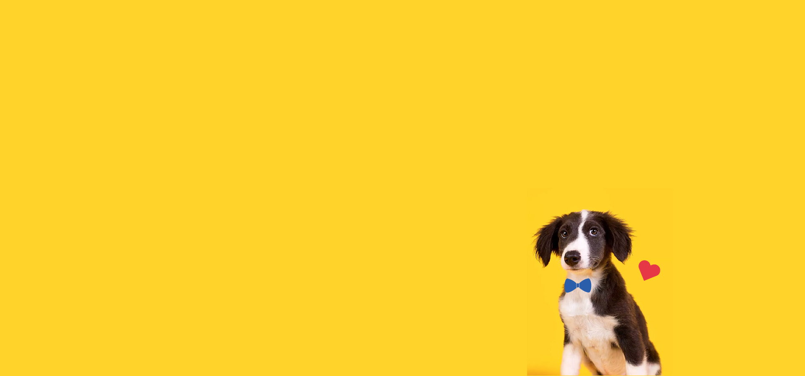
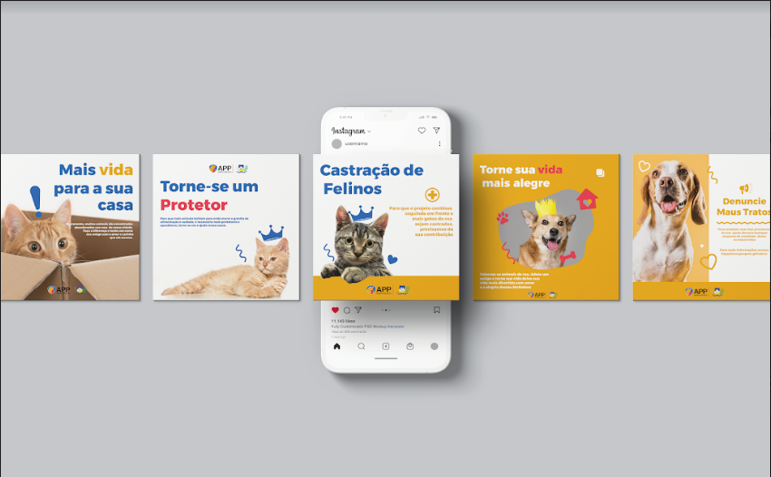

Logo
A marca foi projetada demandando atender ao Conceito de Criação, traz nas suas formas e cores elementos que remetem semióticamente a proteção, o afeto e o respeito.
Este manual de marca foi desenvolvido para que os elementos gráficos criados para o projeto Amor Por Pets possam ser usados da melhor forma possível, seguindo o conceito e o uso correto dos elementos, fazendo com que cumpram perfeitamente a função para que foram planejados.
A marca foi projetada demandando atender ao Conceito de Criação, traz nas suas formas e cores elementos que remetem semióticamente a proteção, o afeto e o respeito.
A área que rodeia o logotipo é muito importante, tende a criar uma melhor harmonia entre os elementos. A área mínima no eixo X, toma como base as primeiras e últimas letras do logotipo e delimita um “espaço livre”, resultando em uma área de respiro. A área mínima no eixo Y, ajuda a evitar a desordem visual de demais elementos que possam competir o espaço de visão com a logo, diminuindo sua legibilidade.
Foi tomada como medida padrão para a área de reserva, a letra “P” que está em uso na sigla, aplicada nos quatro cantos da logo.


É de preferência que as imagens tenham: Alta saturação; Iluminação frontal; Evitar cachorros pedigree;





Todas as cores foram escolhidas baseadas no conceito de criação e na mensagem que o projeto deseja tranmitir
O azul é usado com objetivo de transmitir segurança, racionalidade e serenidade, o amarelo, alegria, e otimismo, já o vermelho, ação, coragem, paixão e foça.
A aplicação principal é na cor branca, mas funciona perfeitamente quando aplicado nas cores da paleta.